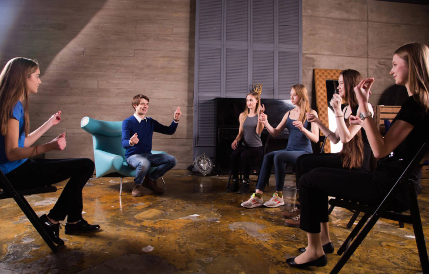

Как стать актером озвучки
Первое, с чего нужно начать карьеру – получение конкретного образования. Это может быть колледж или училище с необходимой специализацией. Для получения диплома о высшем образовании следует поступать в высшие учебные заведения.
Стоит отметить, что данной специальности обучают не только в театральных учреждениях. Учиться на актера дубляжа можно в академиях и институтах культуры. Учитывая востребованность данной профессии, ВУЗы открывают соответствующие факультеты для привлечения студентов.
Учеба в государственных учреждениях хороша тем, что по окончании студент получает диплом государственного образца, который подтверждает прохождение специальной программы.
Опытные актеры рекомендуют поступать именно в театральные учреждения. Преподаватели в таких заведениях способны не только научить всех желающих мастерству быть актером, но и помогут при дальнейшем трудоустройстве. В отдельных группах студенты обучаются раскрывать твой творческий потенциал и работать над собой.
Перед подачей документов рекомендуется ознакомиться с преподавательским составом. Это поможет узнать об их карьере и оценить творческие работы, в которых они принимали участие. Такая специальность, как «актер дубляжа», встречается редко. Как правило, необходимые знания и умения предлагают на общих курсах.
Одного образования, независимо от престижа диплома, недостаточно, чтобы стать востребованным профессионалом. Необходимо постоянно совершенствоваться и развиваться.
В некоторых случаях можно начать работу в сфере дубляжа без официального диплома об образовании. Но даже в этом случае без прохождения специальных курсов не обойтись. Такой успех случается редко и возможен только в случае, когда человек обладает непревзойденным талантом, который компенсирует недостаток опыта.
Одного образования, независимо от престижа диплома, недостаточно, чтобы стать востребованным профессионалом. Необходимо постоянно совершенствоваться и развиваться.
В некоторых случаях можно начать работу в сфере дубляжа без официального диплома об образовании. Но даже в этом случае без прохождения специальных курсов не обойтись. Такой успех случается редко и возможен только в случае, когда человек обладает непревзойденным талантом, который компенсирует недостаток опыта.
На территории России работает несколько государственных ВУЗов, где можно получить необходимые знания. Самые крупные и востребованные из них находятся в столице и в Санкт-Петербурге. Каждый год эти учреждения выпускают несколько тысяч подготовленных специалистов.
Также факультеты по актерскому мастерству можно найти в творческих учебных заведениях крупных городов.